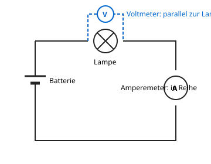

Stromstärke messen
Mit einem KI-Tutor lernen
Ein KI-Tutor erklärt dir diese Seite und hilft dir bei den Übungen. Wähl deinen Assistenten:
Mit Claude öffnen Mit ChatGPT öffnen Mit Mistral Vibe öffnen
Du nutzt dein eigenes Konto beim Anbieter. Der Assistent ist kein Angebot von lernapps.net: lernapps liefert nur Inhalte und Übungen. Die Wahl gilt für alle Seiten, nur auf diesem Gerät.
Warum?
Du weißt jetzt, was die Stromstärke ist. Wie findest du heraus, wie groß sie in einem bestimmten Stromkreis ist?
Erklärung
Die Stromstärke misst du mit einem Amperemeter. Im Schaltplan ist es ein Kreis mit dem Buchstaben A. Es zeigt an, wie viel Strom durch das Gerät fließt.
- Amperemeter
Ein Amperemeter misst die Stromstärke. Man baut es in Reihe in den Stromkreis ein, sodass der ganze Strom hindurchfließt.

Achte auf das Amperemeter rechts. Es sitzt mitten in der Leitung, der Strom fließt durch das Gerät.
Quelle: eigene Zeichnung. Lizenz: CC-BY-4.0.Damit du richtig misst:
- Öffne den Stromkreis an einer Stelle und setze das Amperemeter dort ein: in Reihe.
- Wähle zuerst den größten Messbereich und gehe dann schrittweise zu einem kleineren.
- Schließe das Amperemeter nie direkt an die Spannungsquelle an, ohne Lampe dazwischen.
Beispiel
Ein Amperemeter einbauen
Du willst die Stromstärke in einem Kreis aus Batterie und Lampe messen.
- Trenne eine Leitung zwischen Batterie und Lampe auf.
- Setze dort das Amperemeter ein, sodass der Strom hindurchfließt.
- Schließe den Kreis wieder und lies die Zahl mit der Einheit A oder mA ab.
Übung
Übung
Lösung
In Reihe, an einer Stelle in der Leitung. richtige Antwort
Der ganze Strom muss durch das Amperemeter fließen, darum baut man es in die Leitung ein.
Parallel zur Lampe.
Parallel zur Lampe misst man die Spannung mit dem Voltmeter. Ein Amperemeter dort würde den Kreis fast kurzschließen.
Neben dem Stromkreis, ohne Verbindung.
Ohne Verbindung fließt kein Strom durch das Gerät, und es zeigt nichts an.
Das Amperemeter gehört in Reihe in den Stromkreis.
Mehr dazu:
Übung
Lösung
Richtige Antwort: Die Aussage stimmt nicht.
Falsch. Ein Amperemeter wird in Reihe eingebaut, damit der Strom hindurchfließt. Parallel schließt man ein Voltmeter an.
Mehr dazu: